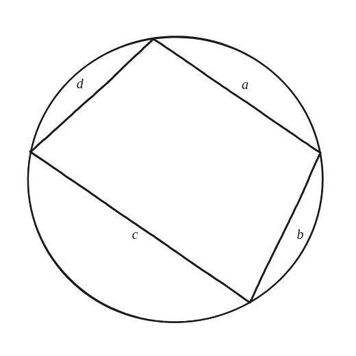
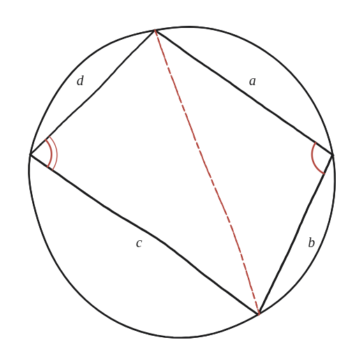

Demostra que, si una figura de quatre costats amb costats a, b, c i d està inscrita en una circumferència, la seva àrea ve donada per la fórmula de Brahmagupta: A = √[(s-a)(s-b)(s-c)(s-d)], on s = (1/2)(a+b+c+d).

Una condició imprescindible, no decorativa
Es demana generalitzar la fórmula de Heron (àrea d'un triangle a partir només dels seus costats) a un quadrilàter —però només quan els quatre vèrtexs són sobre un mateix cercle. Aquesta condició, "inscrit en una circumferència", és essencial per a tota la demostració, no un detall afegit.
Partir per una diagonal, i què aporta el cercle
Una diagonal parteix el quadrilàter en dos triangles que la comparteixen. Els dos angles del quadrilàter que queden a banda i banda d'aquesta diagonal, als altres dos vèrtexs, sumen sempre 180° perquè el quadrilàter és cíclic —ja demostrat, en essència, a la Qüestió 42: cada angle val la meitat del seu arc oposat, i els dos arcs oposats junts fan la circumferència sencera (360°), de manera que els dos angles sumen la meitat, 180°. Aquest és tot el paper que fa la circumferència en aquesta demostració.

La mateixa diagonal, dues expressions
Anomenant B un d'aquests dos angles (l'altre val 180°−B), el teorema del cosinus aplicat a cada triangle dona dues expressions per al quadrat de la diagonal: p²=a²+b²−2ab·cosB i p²=c²+d²−2cd·cos(180°−B). Com que cos(180°−B)=−cosB, igualant-les: a²+b²−2ab·cosB = c²+d²+2cd·cosB, d'on cosB = (a²+b²−c²−d²) / (2(ab+cd)).
Sumar les dues àrees
Cada triangle té àrea (1/2)·costat·costat·sinus de l'angle comprès: com que sin(180°−B)=sinB, l'àrea total és (1/2)(ab+cd)·sinB. Substituint sinB=√(1−cos²B) amb l'expressió de cosB ja trobada i simplificant amb tota cura algebraica (factoritzant una diferència de quadrats), l'expressió es redueix exactament a la forma de Heron generalitzada: Àrea = √[(s−a)(s−b)(s−c)(s−d)], amb s el semiperímetre.
Àrea = √[(s−a)(s−b)(s−c)(s−d)], amb s=(a+b+c+d)/2. Surt de partir el quadrilàter cíclic per una diagonal, aprofitar que els angles oposats sumen 180° (Qüestió 42), escriure la diagonal al quadrat de dues maneres amb el teorema del cosinus, i sumar les dues àrees. Quan un costat es redueix a zero, la fórmula es converteix exactament en la de Heron per a un triangle —el mateix tipus de cas límit que ja va aparèixer a la Qüestió 74.
Comprovació
Costats 2, 3, 4, 5: s=7. Àrea=√[(7−2)(7−3)(7−4)(7−5)]=√(5·4·3·2)=√120≈10,95. Verificat també simbòlicament: la meva derivació (cosinus, àrees, simplificació) coincideix exactament amb la forma de Heron generalitzada per a qualssevol quatre costats.